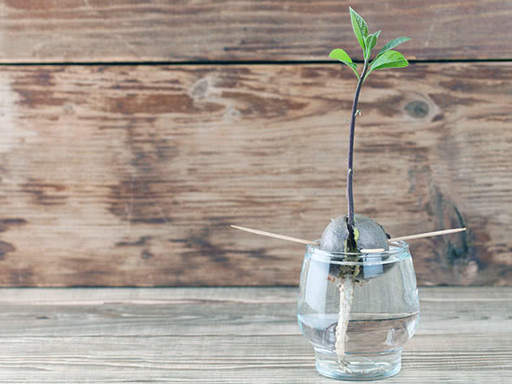

Мало хто знає, що з кісточки авокадо можна виростити дерево в домашніх умовах, а при певному везінні воно може навіть зацвісти та дати плоди.
Авокадо – невибаглива рослина, і кожен має можливість виростити його без особливих зусиль.
Вибір плоду
Щоб кісточка дала паросток, брати її потрібно зі стиглого плоду з темною шкіркою та пружною м'якоттю, яка після натискання повертається до свого попереднього положення.
Шкірка та велика кісточка мають легко відділятися від м'якоті. Якщо плід видався вам недозрілим, потримайте його в кімнатній температурі, загорнувши в пакет із фруктами, що виділяють етилен, – бананами чи яблуками. Цей газ прискорить дозрівання авокадо.
Перед посадкою потрібно добре вимити кісточку й очистити її від м'якоті плоду, щоб вона не гнила та не вкривалася цвіллю.
Як виростити авокадо з кісточки
 На дно горщика поміщають шар дренажного матеріалу – дрібні камені чи керамзит. У якості ґрунту використовують ґрунтову суміш із рівних частин піску, городньої землі та перегною, уклавши її в горщик поверх керамзиту.
Кісточку авокадо заглиблюють у субстрат тупим кінцем таким чином, щоб третина її залишалася над поверхнею. Після посадки ґрунт поливають. Проросте насіння через три-чотири тижні.
Можна проростити авокадо й без використання ґрунту.
У кісточці проробляють дві маленькі дірочки й уставляють у них зубочистки, після чого кісточку опускають у воду тупим кінцем на половину довжини. Весь час, поки кісточка не дасть паростки, потрібно підливати в склянку воду до необхідного рівня, а іноді замінювати її свіжою.
Через час кісточка почне підсихати і тріскатися, і незабаром із неї з'явиться паросток. Можна замінити воду гідрогелем.
Коли авокадо проросте, його необхідно висадити в пухкий ґрунт, занурюючи кісточку в землю приблизно на половину довжини. Зростає авокадо неймовірно швидко: за три місяці приріст може скласти близько 50 сантиметрів. Далі зростання авокадо сповільнюється, і дерево починає витягуватися вгору, зазвичай не даючи бічних пагонів. Для того, щоб спровокувати їх зростання, потрібно прищипнути верхівку, коли авокадо сягне потрібної вам висоти.
Правила догляду за зростаючим авокадо
Авокадо – тропічна рослина, якій необхідні тепло, гарне освітлення та підвищена вологість повітря. Рослину бажано помістити під яскраве, але розсіяне світло, щоби пряме сонце не випалювало його листя. Поливати субстрат, у якому підростає авокадо, потрібно відфільтрованою теплою водою, щойно висохне верхній шар. Зазвичай необхідність у зволоженні виникає 1-2 рази на тиждень. Якщо полив буде занадто рясний або частий, рослина просигналить вам про це: листя авокадо почне жовтіти. Підвищену вологість повітря підтримують регулярними обприскуваннями у вечірній час. Можна тримати поруч із рослиною кілька посудин із водою. Зростаючому деревцю потрібне постійне підживлення мінеральними добривами для декоративних культур. Проводити підживлення слід 1-2 рази на місяць. Окрім того, щорічно навесні, на початку активного зростання, авокадо пересаджують у велику посудину і формують його крону обрізуванням.